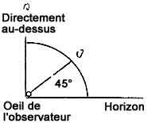
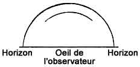

Ce rapport mensuel décrit la progression du Projet Stork,
PPS-100, pour
la période du au . Les besoins d'origine furent les suivants :
Fournir un panel de consultants,
Assister l'amélioration des formulaires d'interrogation,
Analyser les signalements d'observations existants,
Souscrire à un service de coupure de presse, comme ordonné, et
Informer le Sponsor mensuellement de l'ensemble des travaux effectués sur PPS-100.
Il est maintenant anticipé que ces besoins d'origine seront complétés et étendus. Les arrangements formels n'ont pas
encore été achevés.
Synthèse
Le panel de consultants a été sélectionné et endoctriné lors d'une série de réunions. Les membres du panel sont
maintenant engagés dans l'achèvement des besoins restants de PPS-100.
Une analyse préliminaire du dossier de signalements existant a été achevée. L'information dérivée de cette analyse
a été appliquée dans l'amélioration du formulaire d'interrogation actuel. Une proposition de Feuille de Données de
l'Observateur a été préparée et étudiée par le panel de consultants. Des suggestions pertinentes ont été incorporées
dans la proposition de formulaire, qui est jointe pour revue en Section 1. La feuille de
données révisée inclut maintenant l'ensemble des détails techniques considérés comme essentiels. Elle doit par la
suite être évaluée par un astronome, un psychologue et un enquêteur du CAB. Des arrangements sont actuellement faits
pour cette évaluation.
Les faits signalés dans les dossiers présents ou lors de nouvelles observations sont à entrer dans la feuille de
données de l'observateur. Cette information ne sera pas codée pour entrée directe sur cartes perforées. A la place,
les faits seront classés et analysés avant que les entrées soient faites sur les cartes perforées. Pour faciliter ce
processus, un schéma de codage a été préparé pour servir d'étape intermédiaire entre la feuille de données et la
carte perforée. Une copie est jointe en Section 1.
L'élément final dans l'enregistrement de données est la carte perforée sur laquelle les résultats de calculs et
analyses codés sont entrés. Une copie d'une carte typique en également incluse en Section 1.
Les récits d'observations par des journaux fournis par le service de coupure de presse sont actuellement reçu avec
un débit à peu près constant ; cependant, l'article
de Life est aujourd'hui responsable de seulement près de la moitié des coupures de presse. A
l'origine, les coupures étaient copiées à Battelle, puis transmises au Sponsor. Dans le
futur, les coupures de presse seront directement envoyées au Sponsor par Battelle.
Travaux futurs
Les dossiers disponibles seront codés et des cartes perforées seront préparées. Lorsque des cartes pour les
signalements d'observations pour 1 an seront achevées, des études statistiques préliminaires commenceront. Les
résultats de ces études seront utilisés pour apprécier l'adéquation de l'ensemble des formulaires et codes ayant été
conçus. Les corrections et ajouts nécessaires seront faits après cette étude limitée. Alors, les signalements
d'observations restants seront analysés statistiquement.
Section 1
Proposition de Feuille de Données de l'Observateur
Une copie achevée de la proposition de Feuille de Données de l'Observateur est montrée en Pièce 1. Deux
utilisations pour ce formulaire sont anticipées. D'abord les signalements d'observations saisis seront analysés
pour extraire les faits à entrer sur ce formulaire pour codage. Ensuite, lorsque des tests établissent
l'adéquation du formulaire, il pourrait être utilisé directement par les observateurs pour enregistrer les
signalements d'observations. Ce dernier usage conservera le temps aujourd'hui passé à extraire l'information des
signalements actuels pour codage sur les cartes perforées.
Schéma de codage
Le schéma de codage est illustré en Pièce 2. Cette pièce jointe complétée est destinée à servir d'intermédiaire
entre le signalement de l'observateur et le résumé ou les faits de l'observation sur carte perforée. Dans la
plupart des cas, les faits de l'observations ne sont pas directement entrés sur les cartes perforées. Dans les
mêmes cas, les étapes interveantes ne nécessitent que le codage, tandis que dans d'autres des calculs ou analyses
peuvent aussi être impliquées. Avant de discuter de cette utilisation qui sera faite des cartes perforées, il
devrait être souligné que les faits représentés incluent :
Ceux actuellement sur le formulaire standard,
Ceux suggérés par le Sponsor, et
Ceux suggérés par le panel.
Comme on pourrait s'y attendre, beaucoup plus d'entrées sont proposées que cela n'a été le cas auparavant.
Carte perforée
Une carte perforée complétée typique est incluse pour référence en Pièce 3. Cette carte devrait être comparée
avec la feuille de données de l'observateur pour cette observation, préparée d'après le signalement d'origine. La
feuille de données est celle complétée décrite précédemment.
Etudes statistiques
D'après les informations entrées sur les cartes perforées, il sera possible d'analyser de nombreuses
caractéristiques d'observations (voir Pièce 4). Certaines d'entre elles pourraient être évidences, d'autres sont
subtiles, mais toutes semblent intéressantes. La planification des études statistiques est nécessairement
incomplète. Cependant, des exemples pourraient suggérer le périmètre possible de l'étude.
Des études ont été prévues pour révéler la variation dans l'activité d'observation avec le moment et la
position. Le moment des observations en conjonction avec la localisation géographique sera utilisé de plusieurs
manières. D'abord, le moment permettra une corrélation des observations avec un phénomène astronomique et de
marée. En 2nd, les dates et lieux des observations pourraient être corrélés avec les conditions météo. Ces études
aideront à déterminer les périodes et zones d'activité inhabituelle. De plus, des données utiles sur les
trajectoires et vitesses pourraient déboucher des ces analyses.
Les données seront compilées sur le délai entre les observations et la réception de rapports et d'information
supplémentaire. Cette connaissance aidera à évaluer les rapports et à déterminer l'efficacité des procédures de
collecte.
La localisation géographique des observations sera codée pour permettre une manipulation étendue. Par exemple,
il sera possible d'extraire les cartes perforées de zones délimitées par des parallèles de latitude et des
méridiens de longitude. Il sera également possible d'entrer des données de position pour des installations telles
que l'ADC, le SAC et autres. La distance et
l'orientation des lieux d'observation par rapport à ceux des installations pourra alors être calculaté. Les
caractéristiques d'apparence et de performance des observations seront également codées. Ces codes aideront à
classifier les observations, ce qui est l'étape préliminaire à l'identification. Là où le contrôle de
caractéristiques de performance et d'apparence correspond à des observations multiples, les données d'heures et
lieux pourraient être exploitées pour suivre la vélocité des objets.
Les formulaires de questionnement sont conçus pour extraire information sous forme de faits discrets, à
corroborer par la suite par une description écrite intégrée. Il y a ici 2 objectifs. D'abord, le remplissage du
formulaire aidera à évaluer l'observateur. Ensuite, les faits discrets pourraient être vérifiés par rapport au
récit écrit pour évaluation. Certaines questions subtiles ne peuvent être répondues facilement, si ce n'est du
tout. Les réponses associées aideront à l'évaluation de l'observateur.
De ces brefs commentaires, il devrait être clair que le schéma basique de codage est brand. Avec des cartes
perforées, une analyse de nombreux faits sur chaque observation sera rapide et commode. Cependant, une fois que le
code est fixé, il sera difficile d'extraire l'information non incorporée dans le code. Pour cette raison,
approximativement 10 % de l'espace disponible pour les entrées dans le code a été laissé pour permettre cette
extenssion. L'extension désirée doit être prévue avant que le code soit figé. C'est un des éléments du travail
prévu pour le futur immédiat. Après que le code soit fixé, une extension nécessaire du système peut être effectuée
avec des cartes supplémentaires.
{ Exemple d'observations d'"ovni" }
Pièce 1. Proposition de Feuille de Données de l'Observateur
Incident 202
Lorsque le choix est donné, entourez les réponses appropriées, ou insérez une réponse.
1. Date de votre observation :
08
11
48
Jour
Mois
Année
2. Date où vous avez signalé l'observation :
19
11
48
Jour
Mois
Année
3. Quelle heure était-il lorsque vous avez vu l'objet :
6
50
Hrs.
Min.
A.M. P.M. Daylight Standard
Zone: Eastern, Central, Mountain, Pacific, ________________________ Autre
4. Longueur du temps où l'objet a été observé. Estimation :
1
Heures
Minutes
Secondes
5. Lieu d'observation :
Newark Air Force Base
Newark
N. J.
U.S.A.
Adresse postale
Ville ou Commune
Etat
Pays
6. Où étiez-vous au moment de l'observation :
A l'intérieur d'un bâtiment, dans une voiture, dehors,
______________________
Autre
7. Vous déplaciez-vous à un moment donné de cette observation :
Non
Oui ou Non
8. Did you stop at any time during this sighting :
_____________
Oui ou Non
9. Si vous vous déplaciez - Indiquez :
___________
et
___________
miles/h
Direction
Vitesse
10. Comment l'objet a-t-il été observé :
Oeil nu
Lunettes de vue
Fenêtre ou Pare-brise
Jumelles, Télescope, Théodolite
Autre _____________________________
11. Comment en êtes-vous venu à remarquer l'objet : Regardait vers la Lune
_________________________________________________________________
_________________________________________________________________
12. Décrivez ce que vous avez vu aussi brièvement que possible dans les espaces suivants :
13. Comment l'objet a-t-il disparu de vue : Soudain ou Graduellement Entourer un
14. Est-ce qu'à un momnet quelconque l'objet :
A changé de direction
A changé de vitesse
S'est déplacé derrière quelque chose : Nuage, Maison, Arbre, autre ________________
S'est fondu avec le paysage
A diminué de taille
A diminué sa luminosité
S'est déplacé devant quelque chose
Autre : __________________________________________________________________
15. Lorsque vous avez regardé l'objet pour la 1ʳᵉ fois, à quelle direction faisiez-vous face ?
N.N.O.
16. Lorsque vous avez vu l'objet pour la dernière fois, à quelle direction faisiez-vous face ? S.S.O.
Croquis A

17. Sur le croquis A suivant, dessinez une ligne depuis l'œil de l'observateur vers l'arc
circulaire pour montrer l'élévation apparente de l'objet dans le ciel,
Là où vu pour la 1ʳᵉ fois, indiquez "a".
Là où vu la dernière fois, indiquez "b".
Croquis B

18. Sur le croquis B suivant, indiquez "a" à la position apparente de l'objet la 1ʳᵉ fois qu'il a
été vu et "b" au point où il a été vu pour la dernière fois. Tracez le chemin apparent de l'objet entre les points a
et b.
Si possible indiquez 1, 2, 3, etc., le long de la trajectoire tracée pour montrer les positions successive de
l'objet après des intervalles de temps égaux pendant l'observation.
Croquis C
19. Sur le croquis C veuillez indiquez les caractéristiques observées de l'objet telles que :
Forme apparente (avec bords pointés ou arrondis),
Direction de mouvement apparente (indiquée par flèche), et
Autres détails, échappement, traînées, queues, surfaces, etc.
Croquis DSoleil et la Lune sont montrés tels qu'ils apparaissent dans leur taille
relative exacte. Dans ce croquis D, indiquez la taille apparente de ce que vous avez vu.
21. Avec vos propres mots veuillez décrire l'observation que vous avez faite. Utilisez des croquis
si vous le souhaitez. Toutes les observations depuis le moment de la première observation jusqu'au moment de la
disparition sont importantes. Incluez une description des conditions météo, du vent, et des nuages au moment de
l'observation :
, je me tenais juste à l'extérieur du hangar n° 7 à la base aérienne de Newark, du
côté sud du hangar. C'était une nuit parfaitement claire, je regardais en haut vers la Lune et remarquais un objet lumineux pâle courrir à travers
le ciel. Il avait environ 1/3 de la brillance de la Lune, rond comme un disque, avec peu ou aucune profondeur
(épaisseur). Il semblait être environ du même diamètre relatif que la Lune. Il voyagea du nord-nord-ouest selon un arc vers le
sud-sud-ouest en environ 1 s ou moins passant hors de vue au-dessus d'un autre hangar. Je n'ai entendu aucun son de
la part de l'objet. J'estime la vitesse de l'objet à 800 miles/h, et son altitude à 5 ou 6000 pieds. J'ai vu des
appareils à réaction faire des approche tactiques à ce terrain à approximativement 600 miles/h, et à en juger
d'après eux, la vitesse de l'objet que j'ai vu était au moins plus rapide de 200 miles/h. De là où je me tenais, je
pouvais voir approximativement 75 % de la trajectoire de l'objet. Le pic de son arc était approximativement de 45 °
au-dessus de l'horizon à l'ouest-sud-ouest de ma position.
22. Votre nom complet : Edmund J. Cisek
23. Votre adresse : Newark (New Jersey)
24. Votre occupation : Civilian Dispatcher
25. Dernière école que vous avez suivie :
26. Année de dernière attendance à cette école :
27. Veuillez lister les noms et adresses des personnes ayant discuté de cette observation avec
vous. Il n'est pas nécessaire de lift les noms d'officiels ou enquêteurs.
28. D'autres commentaires que vous considérez importants devraient être entrés ici. Utilisez des
feuilles supplémentaires de la même taille si nécessaire :
Distance estimée de l'objet à l'observateur, 5000 à 6000 pieds.
Pièce 2. Codes
Code 1. Général
A. Chaque colonne doit avoir au moins 1 entrée. Si aucune donnée n'est disponible pour une colonne, alors X doit
être utilisé.
b. Si un nombre dans une colonne est utilisé pour entrer une donnée, alors X qualifie la donnée tel qu'indiqué
dans le code pour la colonne spécifique.
Code 54 Accélération angulaire (changement de vitesse angulaire)
Code 55 Orientation d'apparence
X Variable
X
Y
Y
0 Zéro, V=constant
0 - N
1 Augmentant lentement
1 - NE
2 Diminuant lentement
2 - E
3 Augmentant rapidement
3 - SE
4 Diminuant rapidement
4 - S
5 Augmentant très rapidement
5 - SO
6 Diminuant très rapidement
6 - O
7
7 - NO
8
8
9
9
Code 56 Orientation de disparition
Code 57-58 Elévation par rapport au sol, en degrés
X - Disparaît soudainement
Initial
Final
Y
X Variable
X Variable
0 - N
Y
Y
1 - NE
0 0-9
0 0-9
2 - E
1 10-19
1 10-19
3 - SE
2 20-29
2 20-29
4 - S
3 30-39
3 30-39
5 - SO
4 40-49
4 40-49
6 - O
5 50-59
5 50-59
7 - NO
6 60-69
6 60-69
8
7 70-79
7 70-79
9
8 80-90
8 80-90
9
9
Code 61 Orientation de l'objet Inclinaison apparente de l'axe principal de l'object par rapport à
l'horizontale
Code 62-63-64 Occupation civile
X Variable
Dictionnaire des Titres d'Occupation, Vol. 2, 2nde Edition, pp. XIX-XXVI. Départment U.S. du
Travail, Bureau de la Sécurité du Travail, U.S. Government Printing Office, Washington, D.C., 1949. Voir pp.
XIX-XXVI.

 Soleil et la Lune sont montrés tels qu'ils apparaissent dans leur taille
relative exacte. Dans ce croquis D, indiquez la taille apparente de ce que vous avez vu.
Soleil et la Lune sont montrés tels qu'ils apparaissent dans leur taille
relative exacte. Dans ce croquis D, indiquez la taille apparente de ce que vous avez vu.